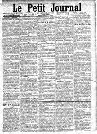

Publications "Wir müssen wissen. Wir werden wissen." (David Hilbert) |
 |
Cette page encore jeune contient mes différents travaux, y compris mes différents mémoires d'étude.
Publications
- Uniqueness of roots up to conjugacy in circular and hosohedral-type Garside groups. (2023)
Journal of Group Theory 27, 5 (2024) p. 1091-1128
- Generalization of the Dehornoy-Lafont order complex to categories. Application to exceptional braid groups.(2023)
Applied Categorical Structures 32, 1 (2024) Article No. 1, 28 pp.
- Regular theory in complex Braid groups. (2022)
Journal of Algebra 620 (2023) p. 534-557
Pré-publications
- Parabolic subgroups of complex braid groups: the remaining case. (2024)
- Springer categories for regular centralizers in well-generated complex braid groups. (2023)
Mémoires d'études
- Garside groupoids and complex braid groups. Thèse de doctorat, dirigée par Ivan Marin (2024)
- Théorie de Garside, applications aux groupes de tresses complexes. Cas de G31. Mémoire de Master 2, dirigé par Ivan Marin (2021)
- Éléments de théorie des distributions. Analyse de Fourier des distributions. Mémoire de Master 2 préparation de l'agrégation externe, dirigé par Olivier Goubet (2020)
- Compléments sur l'homologie générale. Théorie des catégories (ex)triangulées. Mémoire de Master 1, dirigé par Yann Palu (2019)
- Théorie des Catégories et Introduction à l'homologie. Mémoire de Licence 3, dirigé par M. Yann Palu (2018)